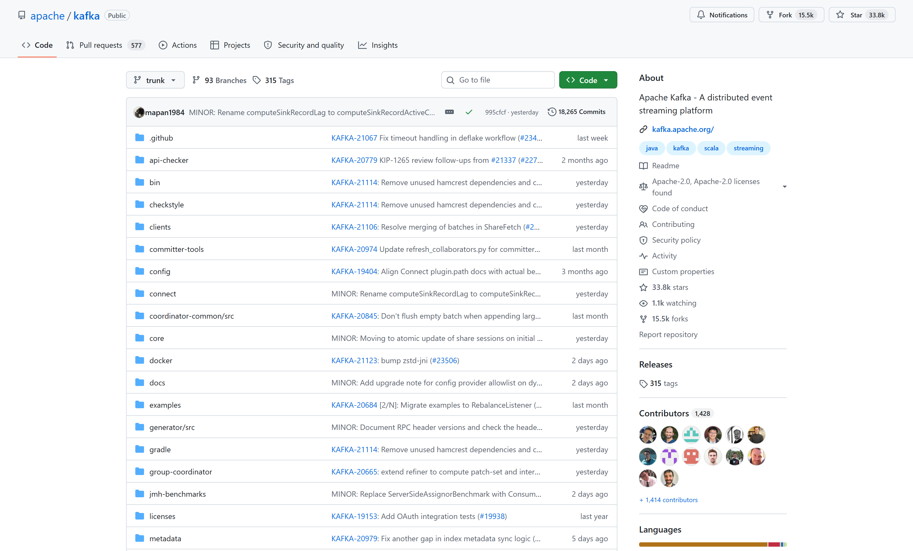
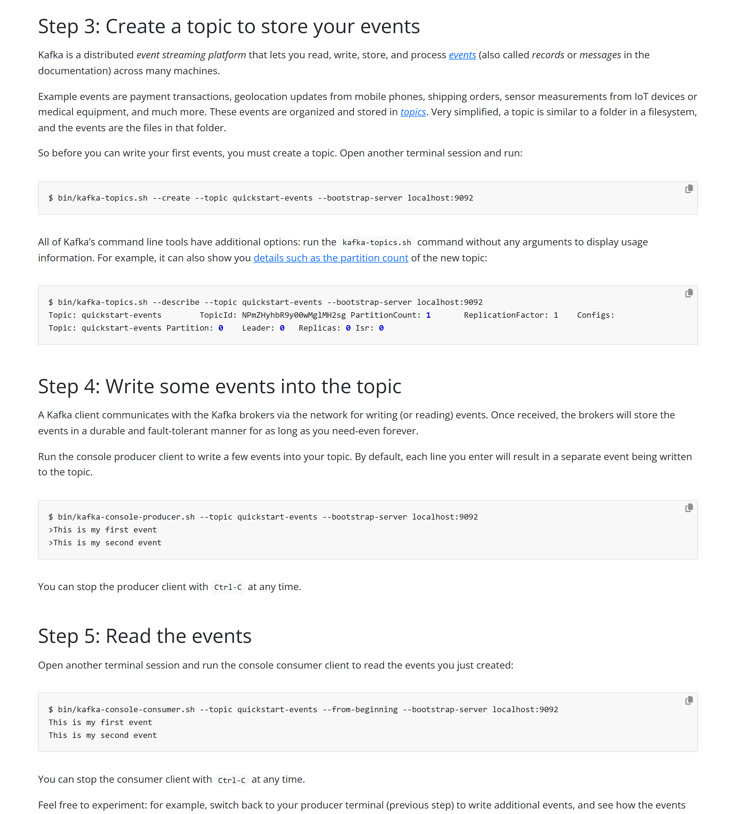
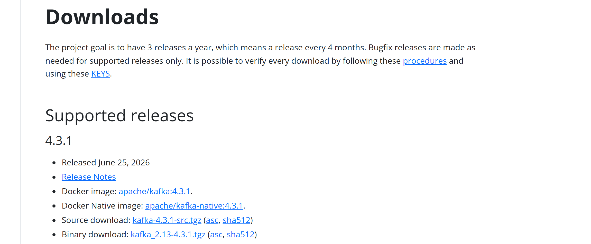

OSS PROJECT INTRO · APACHE KAFKA 系列第 1 期：认识项目
上一个项目我们聊完了 Spring Cloud Gateway，今天开启新项目 Apache Kafka。系统之间直接调用久了，你一定见过这些场面：流量洪峰一来下游被打垮、加一个消费方就得改一次生产方代码、想让两个系统用同一份数据只能各拉各的。Kafka 的答案是在系统中间放一个数据中转站——官方定义一句话：an open-source distributed event streaming platform，开源的分布式事件流平台。一句话心智模型：分布式提交日志——事件只能追加写，落在日志里可回放，消费方各拿各的指针按偏移量读。注意它不只是消息队列：数据管道、流式分析、数据集成都是它的主场。本期结束，你能答上四个问题：Kafka 是什么、它为什么快、和 Pulsar 怎么选、什么场景该选它。
2011 年的 LinkedIn 面对的正是这个局面：用户行为事件、消息、指标日志要喂给几十个系统——监控要看、推荐要算、报表要存。最初的做法很直觉：需要谁的数据就去调用谁，或者谁需要就来拉。系统一多，这套"点对点直连"立刻露出三堵墙：
LinkedIn 的工程师（Jay Kreps、Neha Narkhede、Jun Rao）给出的解法，不是再造一个更快的调用框架，而是把"调用"换成"中转"：所有事件先进一个中央日志系统，生产方写完就走，消费方按自己的节奏来读。这个内部项目 2011 年以论文《Kafka: a Distributed Messaging System for Log Processing》发表并开源，同年进入 Apache 孵化器——它一开始就不是为"发消息"而生，而是为"整个公司的数据管道"而生，这决定了它后面所有设计的走向。
kafka.apache.org 官网开门见山（2026-09-19 核对）："Apache Kafka is an open-source distributed event streaming platform used by thousands of companies for high-performance data pipelines, streaming analytics, data integration, and mission-critical applications."——开源的分布式事件流平台，成千上万家公司用它做高性能数据管道、流式分析、数据集成和关键业务应用。注意定位词是事件流平台而不是消息队列：队列只是它最早期的用途，平台四件套（生产订阅、持久存储、流处理、连接集成）才是完整的它。
一句话心智模型：分布式提交日志——事件只能追加到日志末尾，写完就不改；每条事件带一个递增的偏移量（offset）当身份证；消费方自己维护"读到哪了"的指针，按偏移量取数，读多快、读几遍都随你。和传统队列的根本区别在"消息的命运"：队列把消息交给消费者就删掉，一份消息只属于一个消费者；Kafka 的日志把事件留在磁盘上（默认保留数小时到数周，可配置为永久），想从头回放随时可以，想给新系统补历史数据随时可以——存储从"中转暂存"变成了"第一公民"，这是它敢叫流平台、而不是队列的底气。

GitHub apache/kafka 仓库页：Star 33.8k · Fork 15.5k · About 自述 "Apache Kafka - A distributed event streaming platform" · Apache-2.0 license · 语言条 Java 90.2% / Scala 7.7% / Python 1.8% · Releases 区显示 315 tags——官方发版走官网下载页，不在 GitHub 发 Release（2026-09-19 截图，github.com/apache/kafka）。把心智模型记成一台"分布式提交日志机"：① 追加写——事件只能加在日志末尾，像记账一样一条接一条，历史永不改写；② 可回放——日志躺在磁盘上，新消费方从第一天的事件开始补课都行；③ 按偏移量消费——"读到哪了"是消费方自己的指针，快慢互不影响，读完日志也不删。第 3 期拆分区、副本、消费者组这些概念时，你会发现它们全是这三句话的展开。
不装环境也能看清 Kafka 的形状。下面三步逐字取自官方《Quickstart》（4.3.1 文档），第 2 期会亲手跑一遍。
第一步，建一个主题——主题是日志的逻辑名字，建完立刻看它的形态：
$ bin/kafka-topics.sh --create --topic quickstart-events --bootstrap-server localhost:9092
$ bin/kafka-topics.sh --describe --topic quickstart-events --bootstrap-server localhost:9092
Topic: quickstart-events TopicId: NPmZHyhbR9y00wMglMH2sg PartitionCount: 1 ReplicationFactor: 1 Configs:
Topic: quickstart-events Partition: 0 Leader: 0 Replicas: 0 Isr: 0第二步，追加写——控制台生产者每敲一行就是一条事件，此时没有任何消费方在线，写操作照样完成：
$ bin/kafka-console-producer.sh --topic quickstart-events --bootstrap-server localhost:9092
>This is my first event
>This is my second event第三步，从头回放——新开终端跑消费者，带上 --from-beginning，刚才两条事件原样吐回：
$ bin/kafka-console-consumer.sh --topic quickstart-events --from-beginning --bootstrap-server localhost:9092
This is my first event
This is my second event官方在 Step 5 的原话：事件被持久保存，可以按需读任意多次、被任意多个消费者读——这正是"提交日志"三个特征的现场版：写与读彻底解耦，事件落地不动，谁都能随时来取。

官方《Quickstart》Step 3-5 原文：建主题（--describe 显示 PartitionCount 1）→ 控制台生产者逐行写事件 → 控制台消费者 --from-beginning 原样回放（kafka.apache.org/quickstart，4.3.1 文档，2026-09-19 截图）。Kafka 的吞吐是同赛道的天花板，秘密不在什么黑科技，而在三条朴素到极点的取舍。第一，顺序追加写。传统消息存储为了支持查找、修改、删除，用 B 树一类的随机读写结构，机械磁盘的磁头来回找位置，一秒几百次就到顶。Kafka 的日志只追加不修改——原论文（NetDB'11）画过那张著名的对比图：磁盘顺序读写的吞吐，能比内存随机访问还稳。用"最笨"的写法，换来数量级的差距；代价是不能改、不能随机删，而日志恰好不需要。
第二，零拷贝。把一条消息从磁盘送到网卡，常规路径是磁盘 → 页缓存 → 应用程序缓冲 → Socket 缓冲 → 网卡，四次数据拷贝，内核态用户态来回切换。Kafka 用操作系统现成的 sendfile 系统调用：数据从页缓存直接送到网卡，应用程序全程不碰内容——反正日志只需要"原样转发"，不需要在应用层加工。第三，批量与压缩。生产端把消息攒成批次、压缩后再发，网络与服务端都按批处理，摊薄单条成本。三条加起来，单机每秒百万级消息就是这么来的（页缓存的功劳也很大：读写都先命中内存，落盘交给操作系统后台刷）。细节第 3 期与第 5 期展开，今天记住直觉：少搬几趟，快一个量级。
| 指标 | 数值 | 来源与口径 |
|---|---|---|
| GitHub Stars | 33.8k（Fork 15.5k） | github.com/apache/kafka 仓库页，2026-09-19 核对 |
| 财富百强企业采用 | 80%+ | 官网原话 "More than 80% of all Fortune 100 companies trust, and use Apache Kafka"，2026-09-19 核对 |
| 终身下载量 | 500 万+ | 官网 "More than 5 million unique lifetime downloads"，2026-09-19 核对 |
| LinkedIn 生产规模口径 | 7 万亿条/日 | LinkedIn 工程博客《How LinkedIn customizes Apache Kafka for 7 trillion messages per day》（2019-10）；2015-09 口径为 1.1 万亿条/日，引用注意时间点 |
| Apache 顶级项目 | 2012-10 毕业 | 2011 年开源并进入孵化器；官网称其为 ASF 最活跃项目之一（2026-09 核对） |
| 最新稳定版 | 4.3.1 | 官网 Downloads 页 "Released June 25, 2026"；在支持版本线 4.3 / 4.2 / 4.1 |
官网首页原文："More than 80% of all Fortune 100 companies trust, and use Apache Kafka."——百分之八十以上的财富百强企业在用（2026-09-19 截图，kafka.apache.org）。
行业渗透官网也有明细：制造业、保险、能源与公用事业十强全数在用，银行 7/10、电信与交通 8/10（kafka.apache.org，2026-09-19 核对）。两处提醒：其一，Kafka 不在 GitHub 发 Release，仓库侧栏只有 315 个 tags，版本真源以官网 Downloads 页为准；其二，二进制包名 kafka_2.13-4.3.1.tgz 里的 2.13 是 Scala 版本号，别误当成 Kafka 版本。

kafka.apache.org/downloads：Supported releases 当前为 4.3.1 / 4.2.1 / 4.1.2 三条版本线并行；4.3.1 条目原文 "Released June 25, 2026 · Docker image: apache/kafka:4.3.1 · Binary download: kafka_2.13-4.3.1.tgz"；页面自述项目目标是每年 3 个版本（每 4 个月一个）（2026-09-19 截图）。本系列全部口径锚定 4.3.1。这段演进读下来有个值得咀嚼的点：Kafka 三次都选了"更笨但更稳"的那条路——存储用不可变的追加日志，而不是花哨的可变结构；扩容用"多加一段日志（分区）"的水平切分，而不是单机垂直优化；元数据管理从借外力（ZooKeeper）到自研内置（KRaft），一步步把命门收回到自己手里。这些取舍第 3 期与第 5 期都会展开。
消息与流赛道玩家不少，各就各位（定位为各项目官方公开口径，2026-09 核对）：
| 方案 | 架构定位 | 吞吐与扩展 | 拿手好戏 | 代价 |
|---|---|---|---|---|
| Apache Kafka 4.3 | 分布式提交日志：分区水平切分，存储即日志 | 吞吐标杆，单机百万消息/秒级；扩容靠加分区加机器 | 日志管道、事件流、流计算底座；Connect/Streams 生态最全 | 分区与副本由自己扛：Topic 过万要懂调优 |
| Apache Pulsar | 存算分离：Broker 无状态 + BookKeeper 分层存储 | 百万级 Topic 优雅扩缩，存储层独立伸缩 | 多租户、跨集群复制、海量 Topic 场景 | 组件更多，运维与排障链路更长 |
| RocketMQ | NameServer 路由 + Broker 主从/多副本 | 十万级 Topic（5.0 后大幅提升），低延迟队列 | 事务消息、定时/延迟消息是一等公民；Java 栈亲和 | 流生态与海外社区弱于 Kafka |
| RabbitMQ | Erlang/AMQP：交换机路由模型 | 吞吐低一个数量级，胜在单条延迟与管理体验 | 灵活路由拓扑、低延迟小消息、管理界面友好 | 海量日志管道与回放场景力不从心 |
怎么选一句话：偏流式管道与流计算选 Kafka；偏海量多租户与弹性扩缩看 Pulsar；偏事务与定时消息看 RocketMQ；偏灵活路由与轻量队列用 RabbitMQ。Kafka 与 Pulsar 的架构差异是本系列刻意安排的对照实验——本线 Pulsar 系列第 0011 期起五连讲拆过它的计算存储分层，daily 线也有一篇正面对比：Pulsar 的存算分离到底解决了 Kafka 的什么问题，原理深入见 daily 系列 0012 期，两边对照着读收获最大。
流传很广的一句经验："Kafka 分区不是越多越好，多了集群反而开始抖。"听起来反直觉——分区越多并行度越高，怎么会抖？原因藏在心智模型里：每个分区都是一段独立的提交日志，一段日志意味着一组文件段和索引、一份页缓存占用、一条副本同步流。把这个乘数放大一百倍：
所以老手建 Topic 都很克制：分区数按吞吐需求规划，不为"以后可能用"预铺几百个分区。"为什么快的设计，为什么多了会抖"——同一套机制的两面，第 3 期架构篇专门拆。这个教训也不只属于 Kafka：Pulsar 的存算分离之所以把 Broker 做成无状态，就是为了把"分区多了拖垮协调层"这类问题连根拔掉，两边对照着看，架构取舍的味道就出来了。
✅ 适合：
❌ 错配：
一条判断捷径：当数据是"一条接一条持续产生、写完不改、多个系统都要用"的时候，就该想到 Kafka；当消息是需要"路由、改写、单条确认"的任务件，先看看 RabbitMQ。
每题点击选项立即反馈 · 共 3 题
1. Kafka 和传统消息队列最根本的区别是什么？
2. 下列哪组是 Kafka 高吞吐的三大支柱？
3. 一个团队要"百万级 Topic、频繁弹性扩缩容的多租户平台"，最对口的是谁？
消息的"命运"是两种系统所有差异的总开关，连锁好处至少有四条。第一，新消费方可以补历史。队列里的消息删了就没了，新系统想接入只能做双写迁移；Kafka 里新消费组把指针拨回日志头，几小时的历史数据自然补齐——上回放这一条，系统演进的成本就从"项目级"降到"配置级"。第二，故障恢复等于重新消费。下游算错、逻辑升级、数据修复，都变成"把指针拨回去重放一遍"，不用人工对账；流计算框架的"重算"能力，地基就是这份不删的日志。第三，一份数据天然多订阅。队列一份消息只给一个消费者，多系统要么各建队列要么互相协调；日志摆在那，风控、报表、数仓各拿各的指针互不干扰，"广播"不需要任何额外机制。第四，存储层可以做时间换空间的所有优化。正因为消息不删、只追加，Kafka 才敢用顺序写、零拷贝、批量压缩这套组合拳——可变结构要支持改和删，就注定与这些优化无缘。回过头看，"消费即删"还是"消费不删"，本质是"中转站"和"日志系统"两种定位的分岔——定位不同，一套设计全部不同，这是理解 Kafka 最重要的一条主线。
官方基准数字只是入场券，选型验证建议按"场景 → 运维 → 生态 → 退化行为"四步走。第一步，用自己的负载复测。官方数字通常来自大分区、大批量、无积压的理想环境；拿你真实的消息体大小、生产峰值、订阅数量建一套测试，看吞吐和延迟的 P99 而不是均值——消息平台的口碑差异大多藏在尾部延迟里。第二步，测退化行为，而不是理想行为。关键问题：消费者积压十亿条时集群什么状态？扩容一个 Broker，分区搬迁要多久、对线上有没有抖动？Broker 宕机恢复，多少分区要多长时间重新选出 Leader？Kafka 的"Topic 多了会抖"和 Pulsar 的"组件多了排障长"，都是退化行为层面的差异，理想路径上根本看不出来。第三步，盘运维与生态账。团队会不会养：Kafka 的分区规划、ISR 调优，Pulsar 的 Broker + BookKeeper + ZooKeeper 三件套；周边接不接得上：Connect 连接器、Flink 集成、监控告警模板，选型选的是整个生态。第四步，问退出成本。数据格式（建议一开始就用 JSON/Avro 这类通用编码）、双跑方案、协议兼容层有没有——消息平台一用就是五年，进得去也要出得来。对应到本系列：第 3 期架构篇拆"为什么快、为什么抖"，第 4 期实战篇给你一套可以复现的测试基准，第 5 期源码导读看设计底线——学完后这套验证清单每一条你都能亲手做。
带走这五句话：
下期预告：第 2 期《5 分钟跑起来》——Java 17 起步，下载解压、KRaft 一条命令起服务，照官方 Quickstart 逐段跑通"建主题 → 写事件 → 读回放"，命令与预期输出逐条对照，顺手收下高频安装报错的解法。
Primary source：Apache Kafka 官方文档 · 4.3——本期定义、Quickstart 命令与输出均出自该文档（与 4.3.1 版本匹配）；版本与下载见 官网 Downloads 页，源码仓库见 github.com/apache/kafka。